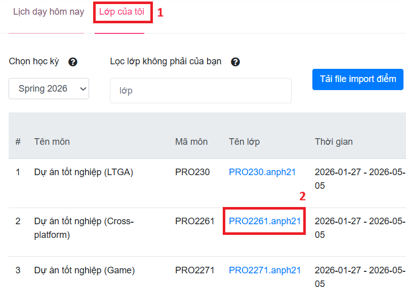
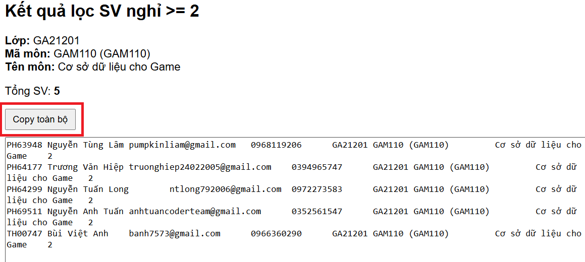

Hướng dẫn lấy danh sách sinh viên
Các bước thực hiện
- Đăng nhập vào trang AP bằng tài khoản giảng viên
-
Mở lớp của tôi

- Chọn vào tên lớp để mở một lớp cụ thể cần lọc danh sách sinh viên nghỉ 2 buổi đầu
- Tại danh sách mở ra, bấm F12 mở console
-
Copy code tại file
Code
- Dán vào console và bấm Enter
-
Kết quả sẽ hiện ra trong console

- Tại file google sheet chia sẻ bộ môn mỗi block, chọn ô trống đầu tiên cột B, và dán kết quả vào đó
Link kỳ Spring 26 Block 2: https://docs.google.com/spreadsheets/d/1iAflGwTx5LUvIMWQIOggQMOcSlTc8UvKjHtHymAvp28/edit?usp=sharing
- Điền mã gv vào cột H
Lưu ý
- Chỉ áp dụng cho các lớp có danh sách sinh viên được hiển thị trên trang AP